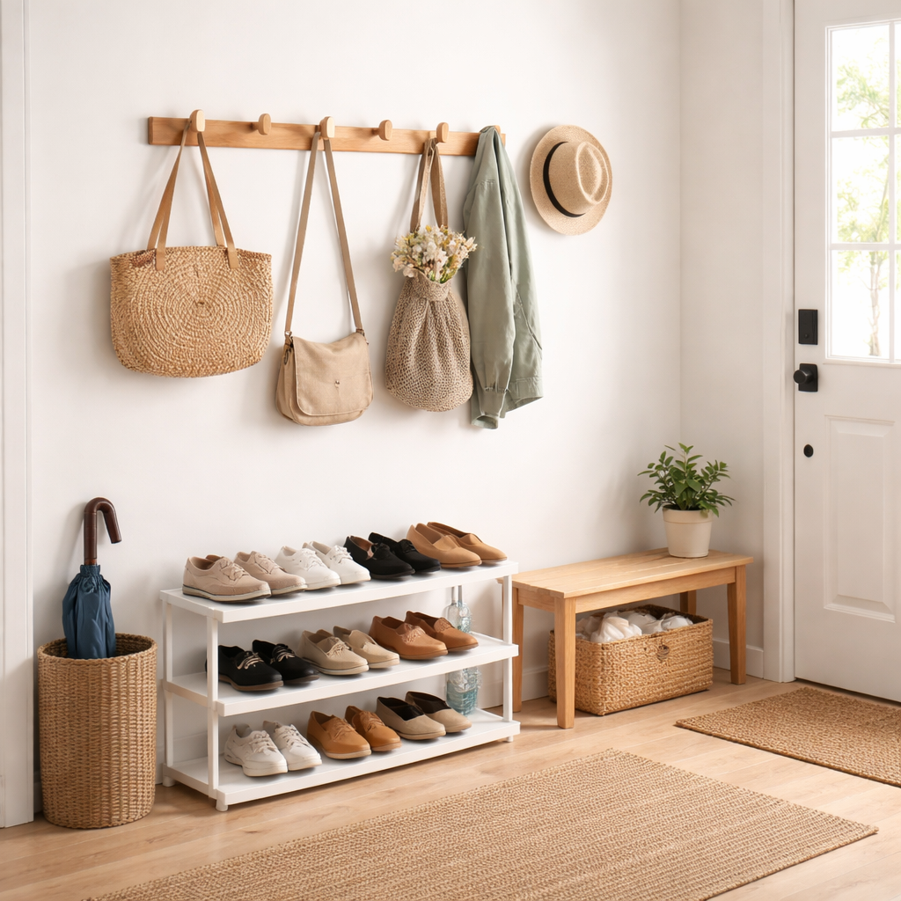

Why Summer Makes Spaces Feel Heavier
Summer arrives and something shifts in your home.
The same rooms that felt fine in spring now feel oppressive. Heavy. Warm even when the temperature isn't that high. You walk into your home office and the air feels thick. Your bedroom at night is uncomfortable despite the fan running.
The space itself seems to be working against you.
Here's what's happening: summer doesn't just bring heat—it exposes every aspect of your space that retains warmth, blocks airflow, or adds visual weight.
Dark-colored furniture and decor absorb heat and make rooms feel warmer than they are. Heavy fabrics trap warmth instead of allowing air to move. Cluttered surfaces and overcrowded rooms restrict circulation, creating pockets of stale, hot air.
Electronics in your home office generate heat constantly. Layered textiles on your bed add unnecessary warmth. Dense decorative items on shelves and surfaces create visual heaviness that translates to mental fatigue when you're already dealing with physical discomfort from the temperature.
This isn't about your home being poorly designed. It's about the environment being set up for cooler months and not adjusted when the season changes.
Summer demands different things from your space: airflow, visual lightness, minimal barriers to circulation, and fewer items competing for your already-drained attention.
The good news: you don't need renovation, expensive cooling systems, or a complete home overhaul. Small, intentional adjustments to how your space is arranged and what's visible can measurably reduce the mental and physical drain summer brings.
Let's make your home work with summer instead of against it.
How Visual Weight Affects Comfort in Summer
Your eyes register everything in a room before your conscious mind processes it. Dark colors. Dense patterns. Surfaces covered with items. Layered textiles. Cluttered corners.
All of this creates what's called "visual weight"—the psychological heaviness of a space based on what you see.
In winter, visual weight can feel cozy. Dark colors, layered fabrics, and filled surfaces create a sense of warmth and enclosure that works with the season.
In summer, that same visual density becomes oppressive.
Dark Colors Retain Heat Visually
Darker colors absorb light and heat. A room painted in deep tones or filled with dark furniture physically retains more warmth than a room with lighter colors that reflect light instead of absorbing it.
But beyond the physics, there's a psychological component: dark spaces feel warmer even when the actual temperature is the same as a light-colored room. Your brain associates dark tones with warmth and density, which intensifies the sensation of heat when you're already uncomfortable.
Clutter Restricts Airflow
Every item on a surface is a barrier to air movement. Books stacked on shelves. Papers piled on desks. Decorative objects crowding tables. Storage bins filling floor space.
Air needs clear pathways to circulate. When every horizontal surface is covered and every corner is filled, air stagnates. Rooms feel stuffier, warmer, and more uncomfortable—not just because of temperature, but because nothing is moving.
Overdecorating Increases Mental Load
Summer heat already drains your energy and focus. When your environment is visually complex—patterns competing, colors clashing, items scattered—your brain expends additional effort processing the scene every time you enter the room.
This cognitive drain compounds physical discomfort. You're already tired from the heat. Now your space is demanding mental energy just to exist in it.
The solution isn't emptying your home. It's intentionally reducing visual and physical density so your space supports comfort instead of adding to the exhaustion.
Summer-Ready Minimalist Decor Principles
Creating a summer-appropriate space isn't about buying new seasonal decor. It's about adjusting what's already there based on a few straightforward principles.
Core Summer Principles
Lighter Colors
Where possible, shift toward lighter tones. This doesn't mean painting walls or replacing furniture—it means choosing light-colored textiles, swapping dark throw pillows for neutral ones, using white or beige storage containers instead of black.
Light colors reflect heat and light, making rooms feel cooler and more open. The visual effect is immediate.
Fewer Surfaces Covered
Clear surfaces allow air to move and create visual breathing room. In summer, aim to keep at least half of every horizontal surface completely empty.
Coffee tables, desks, nightstands, shelves—resist the urge to fill them. Empty space isn't wasted space in summer; it's functional space that allows heat to disperse and your eyes to rest.
Open Layouts
Remove obstacles to airflow. Furniture pushed against vents blocks air circulation. Items clustered in corners trap heat. Rugs layered on top of rugs create insulation you don't need in summer.
Create pathways for air to move through rooms. Position fans where air can reach multiple areas. Don't block windows that could provide cross-ventilation.
Functional Pieces Only
Every item in your space during summer should serve a clear purpose. Decorative objects that exist only for aesthetics can be temporarily stored until fall.
This isn't permanent—it's seasonal. You're not discarding these items; you're acknowledging they add visual weight without providing comfort, which makes them a net negative in summer.
Cooling the Home Office Without Renovation
If you work from home, your office is where summer heat becomes most problematic. You can't avoid being there. The space generates its own heat from electronics. And mental fatigue from temperature compounds the difficulty of maintaining focus.
The Problems:
Heat from electronics. Computers, monitors, chargers, and other devices all generate heat. In a small office or corner workspace, this heat accumulates noticeably throughout the day.
Poor air movement. Desks against walls, equipment blocking airflow, cluttered surfaces preventing air circulation—most home offices are arranged for organization, not ventilation.
Overcrowded desks. Papers, supplies, devices, coffee mugs, random items. Every object on your desk surface adds visual weight and physical barriers to air movement.
The Solutions:
Clear your desk surfaces. Remove everything except what you're actively using. Papers go in drawers or vertical organizers. Supplies go in contained storage. The goal is maximum open surface area for air to reach and minimal visual complexity.
Create focused airflow. Don't rely on a ceiling fan or general room air conditioning to reach your specific workspace. Direct airflow where you actually sit.
Compact Desk Fan
A small desk fan positioned to blow air across your workspace makes a measurable difference in comfort. Choose a compact model that doesn't take up significant desk space and operates quietly enough not to disrupt calls or concentration.
View Desk Fans →Elevate your monitor. Monitors generate heat. When sitting directly on your desk, that heat radiates across your work surface. Elevating the monitor creates airflow underneath and moves the heat source slightly away from where your hands rest.
Monitor Stand with Airflow
A monitor stand raises your screen to a better ergonomic height while allowing air to flow underneath. Choose designs with open space rather than solid bases—the goal is circulation, not just elevation.
See Monitor Stands →Manage cable clutter. Tangled cords trap heat and block airflow. They also create visual chaos that adds to mental fatigue.
Cable Management Solution
Simple cable clips or a cable management box routes cords cleanly and removes them as visual and physical barriers. This takes ten minutes to set up and provides ongoing benefit all summer.
Browse Cable Organizers →Use a light-colored desk mat if needed. Dark desk mats absorb heat. If you use a mat for comfort or surface protection, choose a light color that reflects rather than retains warmth.
Light-Colored Desk Mat
A light desk mat in a neutral tone (beige, white, or light gray) provides surface protection without adding visual or thermal weight to your workspace.
Shop Desk Mats →🌿 Quick Setup Guide
For a complete summer office setup, explore our curated collection of simple summer office cooling essentials designed to work together seamlessly.
Living Room Summer Refresh — Light Without Empty
Your living room shouldn't feel like a showroom, but it also shouldn't feel like a storage unit. Summer is the season to find the middle ground: comfortable, functional, and light.
The Focus: Comfort Without Clutter
You still need seating, lighting, and storage. You still want the room to feel welcoming. The difference is removing the layers that add warmth and visual weight without serving a current purpose.
Practical Adjustments:
Remove heavy decor temporarily. Thick throw blankets, dark decorative pillows, layered rugs, dense wall art—these items create visual and physical warmth. Store them until fall. The room will feel immediately lighter.
Use breathable textiles. If you want throw pillows or light blankets for comfort, choose natural fabrics in light colors. Linen and cotton breathe better than synthetic materials and don't trap heat against your body.
Lightweight Cushion Covers
Swapping heavy pillow covers for lightweight linen or cotton versions in white, beige, or light gray instantly cools the visual temperature of a room. These are easy to change seasonally and store minimal space.
View Cushion Covers →Light Neutral Throw Blanket
A single lightweight throw in a neutral color provides comfort for evening air conditioning without the oppressive weight of winter blankets. Choose open-weave fabrics that allow airflow.
Browse Light Throws →Keep surfaces clear. Coffee tables, side tables, shelves—aim for 50% or more empty space on each surface. This creates visual calm and allows air to circulate freely.
Contain what remains. Items that need to stay in the living room—remotes, charging cables, current reading materials—should be contained in simple storage rather than scattered across surfaces.
Storage Baskets
Storage baskets in natural materials (woven fiber, cotton rope, light wood) keep necessary items organized while maintaining the light, breathable aesthetic summer needs. Choose designs with open weaves that don't feel dense or heavy.
See Storage Baskets →Bedroom Adjustments for Hot Nights
Sleep quality plummets in summer when bedrooms retain heat and feel visually heavy. Small adjustments create significant comfort improvements.
The Problems:
Heavy fabrics. Thick comforters, layered bedding, dark-colored sheets—all retain heat and make sleeping uncomfortable even with fans or air conditioning running.
Overcrowded nightstands. Books, chargers, water bottles, lamps, random items. A cluttered nightstand adds visual stress when you're trying to mentally wind down and physically creates barriers to airflow near where you sleep.
Poor airflow. Beds pushed against walls, furniture blocking windows, items piled on the floor—all restrict air movement in the room where circulation matters most for comfort.
The Solutions:
Simplify your bedding. Remove heavy comforters and extra layers. A lightweight top sheet and a breathable blanket are sufficient for most summer nights. Store winter bedding until temperatures drop.
Minimal nightstand setup. Keep only what you use nightly: a lamp, perhaps a book, a water glass. Everything else—chargers, extra books, miscellaneous items—goes in a drawer or off the nightstand entirely.
Use appropriate lighting. Bedside lamps should provide enough light for reading without heating the space. LED bulbs generate far less heat than incandescent or halogen options.
Minimalist Bedside Lamp
A simple bedside lamp with an LED bulb provides functional lighting without adding heat to your sleeping space. Choose designs with minimal visual weight—clean lines, neutral colors, compact size.
View Bedside Lamps →Clear under-bed space or use it intentionally. Items piled under beds trap heat and restrict airflow. Either clear the space completely or use low-profile storage designed for under-bed use.
Under-Bed Storage
If you need under-bed storage, choose bins specifically designed to be low-profile and made from breathable materials rather than solid plastic. This allows some air movement while keeping items organized and out of sight.
Browse Under-Bed Storage →Position fans strategically. A fan positioned to move air across your body while sleeping makes a measurable comfort difference. Don't just circulate room air—direct airflow where it provides cooling.
🌙 Complete Bedroom Setup
Explore our collection of summer bedroom comfort essentials designed to work together for better sleep in hot weather.
Entryway and Small Spaces That Trap Heat
Entryways, hallways, and small transitional spaces often become heat traps because they're afterthoughts in home organization. Items accumulate, airflow stops, and these spaces become noticeably warmer than the rest of the home.
The Problems:
Shoes and bags blocking airflow. Piles of shoes near doors, bags dropped on the floor, coats hanging too densely—all create barriers that prevent air from moving through the space.
Overfilled shelves. Small spaces often have shelves packed tightly with items, creating visual density and physical barriers to circulation.
The Solutions:
Create vertical storage. Get items off the floor and onto walls where they don't block air movement at ground level.
Wall Hooks
Wall hooks near the entryway give bags, light jackets, and frequently used items a designated home that doesn't consume floor space or block airflow. Choose simple designs that don't add visual clutter.
View Wall Hooks →Use slim storage solutions. In tight spaces, every inch matters. Bulky furniture creates obstacles; slim, purpose-built storage maintains function without crowding.
Slim Storage Bench
A narrow storage bench or vertical shoe rack organizes footwear without creating a wide barrier across the entryway. Look for designs with open shelving or slatted construction that allows air to pass through.
Shop Entryway Storage →Reduce what's stored in these spaces. Entryways become dumping grounds for items that don't have proper homes. Summer is the time to be ruthless: if it doesn't need to be in the entryway for daily function, move it to appropriate storage elsewhere.
What to Store Away Until Fall
Summer minimalism isn't about getting rid of belongings—it's about temporarily removing items that add warmth and visual weight when you need the opposite.
Items to Pack for Fall
- Dark-colored decor: Dark throw pillows, blankets, rugs, and decorative objects. Pack them in a labeled bin and store in a closet or under a bed. They'll be ready when fall arrives.
- Thick fabrics: Heavy curtains, layered bedding, dense upholstery covers. Replace temporarily with lighter alternatives or simply remove until needed.
- Excess wall pieces: Densely hung artwork, shelves crowded with decorative items, layered wall decor. Reducing what's on walls creates visual lightness and makes rooms feel more open.
- Seasonal items that don't serve summer: Candles that add heat when burned, decorative items associated with cooler seasons, extra textiles that aren't currently functional.
The process: choose one afternoon, go room by room, identify items that add warmth or visual weight without serving a current purpose, pack them properly, and store them where they're accessible when the season changes.
This isn't minimalism as a lifestyle—it's seasonal adaptation. You're adjusting your environment to match current needs, knowing these items will return when they're useful again.
Conclusion: Summer Decor Is About Ease, Not Style
Your home in summer should make life easier, not harder.
When spaces are visually light, physically open, and free from unnecessary barriers to airflow, daily comfort improves. Work feels less draining. Sleep comes more easily. The physical discomfort of heat doesn't compound with mental fatigue from environmental chaos.
This isn't about achieving a certain aesthetic. It's about function.
Light colors reflect heat and reduce visual weight. Clear surfaces allow air to move and eyes to rest. Minimal textiles prevent heat retention. Strategic airflow reaches where you actually sit and sleep.
You don't need to transform your entire home in a weekend. Start with the space that's causing the most discomfort—usually the room where you spend the most waking hours.
Clear surfaces. Remove heavy fabrics. Add focused airflow. Store away what's adding weight without adding value right now.
Live with those changes for a few days. Notice the difference in how the space feels when you enter it. Notice whether your focus improves in your office, whether your bedroom feels more restful, whether your living room actually invites relaxation instead of just existing as a space you pass through.
Then address the next area. Small adjustments compound.
Summer is temporary. The heat will pass. But while it's here, your space can either fight against the season or work with it.
Choose the latter. Keep it simple. Keep it light. Keep it intentional.
Comfort isn't complicated—it just requires honesty about what's serving you right now and what isn't.
This post contains affiliate links to cooling accessories, storage solutions, and seasonal decor items. We may earn a small commission if you make a purchase through our links, at no additional cost to you. We only recommend items that serve clear functional purposes for summer comfort and organization. Your support helps Minimalist EcoFinds continue creating helpful content on sustainable and intentional living.